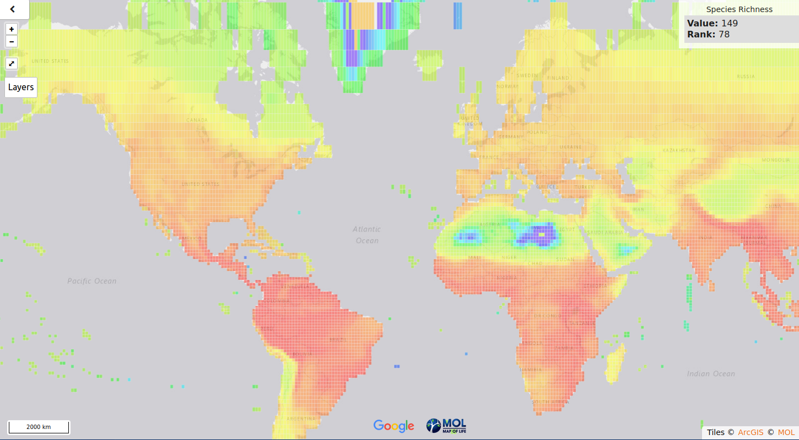
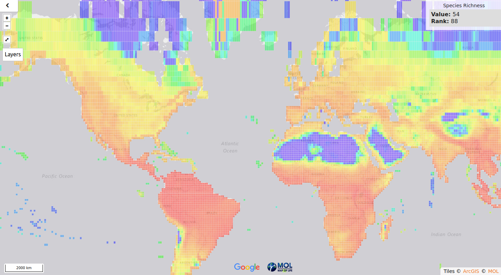

Modelado de nichos ecológicos
Manuel Vargas (
mfvargas@gmail.com
)
Octubre de 2018
La biodiversidad está distribuida de manera heterogénea en la Tierra
Las zonas bajas son más biodiversas que las zonas altas.
Los bosques tropicales y los arrecifes de coral son muy ricos en biodiversidad, pero en los desiertos o en los polos es muy escasa.
La biodiversidad terrestre tiende a ser mayor en zonas cercanas al ecuador.
La biodiversidad marina es mayor en las costas del Pacífico occidental.
Patrones de biodiversidad

Riqueza de especies de aves según MOL
(2018).
Patrones de biodiversidad

Riqueza de especies de mamíferos según MOL
(2018).
Datos de biodiversidad disponibles
Registros de presencia en GBIF
(2018).